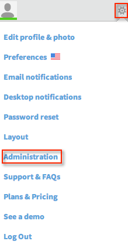

Go to Unison at https://unison.com/login and sign in.
Select the gear icon in the upper right, and then select Administration, as shown below.

In the Identity Provider Data section, copy the following information into the Sign in URL field, as shown below.
Sign into the Okta Admin dashboard to generate this value.Copy and paste the following certificate into the Verification Certificate field, as shown below. Be cure to copy the Begin Certificate and End Certificate lines.
Sign into the Okta Admin dashboard to generate this value.
In the Authorization Options section, select Yes for Allow accounts to be automatically created by SSO, if desired, as shown below.